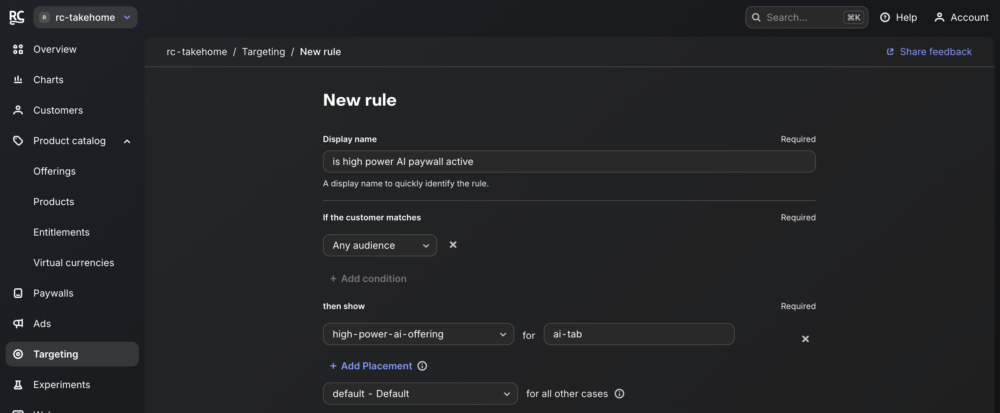
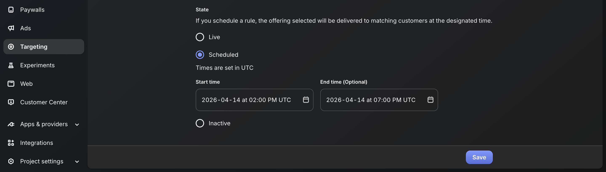
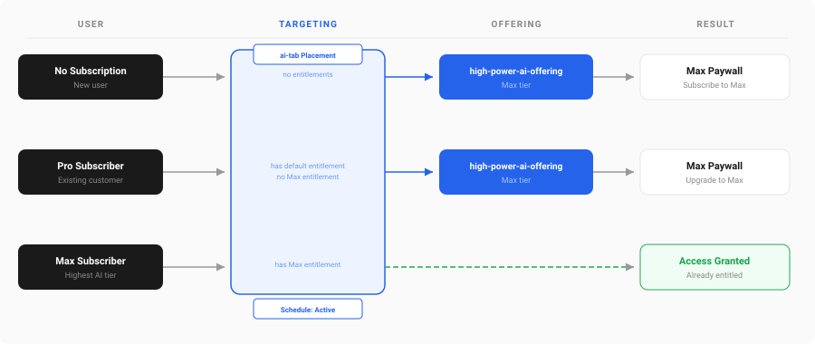
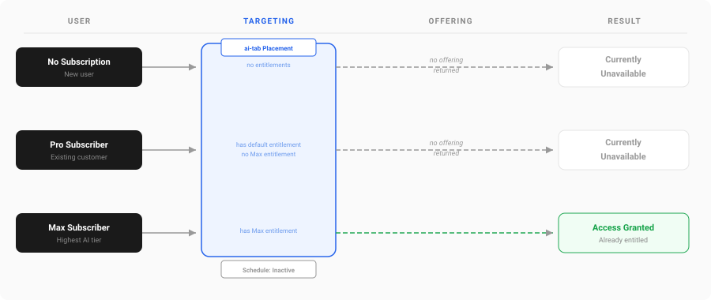
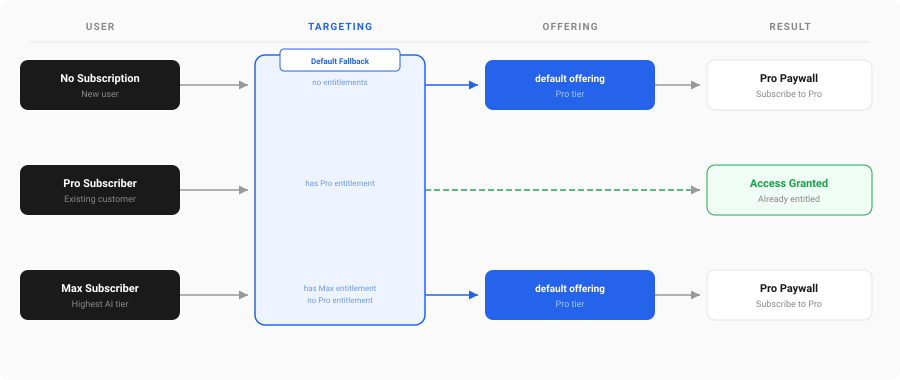

When your AI resources are under heavy load, you can disable the higher subscription tier remotely with no app update required. RevenueCat's targeting feature lets you control which offerings are shown, on a schedule.
Placements
We can use placements to define specific rules for specific "places" in your app. We'll use it as a way to identify the AI features section, and target this placement to control which offering to show.
else if let offering = Purchases.shared.offerings()?.currentOffering(forPlacement: "ai-tab") {
PaywallView(offering: offering)
}
Now we define the offering that should be displayed for the "ai-tab" placement, targeting "any audience", meaning every user in your app:

We also need to define the fallback for all other parts of the app that don't use this placement. In this case, the default offering is returned, which displays the Pro paywall.
Scheduling
We can set up a schedule for this rule to be active:

Putting it all together
Here's how each scenario plays out:
When the schedule is active, the placement returns "high-power-ai-offering" and the app shows the paywall:

When the schedule is inactive, the placement returns no offering and the app shows "Currently unavailable" instead:

For the rest of the app (outside the ai-tab placement), the default offering is returned, which displays the Pro paywall:

FAQs
What happens to existing subscribers when the schedule expires?
Their entitlement/access stays active regardless of the schedule.
Can this be toggled manually outside the schedule?
Yes, you can make it live/inactive from the RevenueCat dashboard at any time.
How quickly does the change propagate?
Next time the SDK fetches offerings, typically when the app is next opened or brought back to the foreground.
What if I have other offerings with different paywalls?
You can retrieve the right offering via placements, the current offering, or by querying for a specific offering by name.